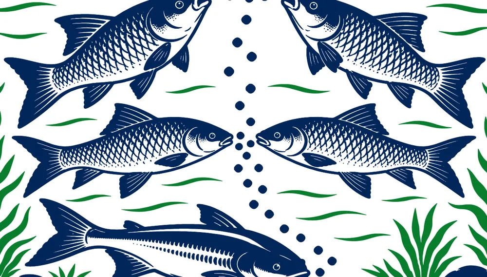

Ulti-Float
Customised Floating Fish Feed
24–32%Protein
2–4 mmPellet
40 kgBag
Customised Floating Fish Feed
Floats on the surface
Twin-screw processed floating pellets that stay on the surface, so you can watch your fish feed and never overfeed.
Whether your stock feeds at the surface, at the bottom or as fingerlings, there is an Ulti feed built for it. Each is available in three protein grades so you can match feed to growth stage.
Our feeds are formulated around the geography, species and water conditions of the farms we serve. The result shows up where it matters: in your harvest and your margins.
Balanced protein, fat and energy levels matched to the species you farm, so fish reach harvest weight faster.
Precisely formulated nutrition means more of every kilo of feed turns into fish, cutting your cost of production.
Vitamin and mineral premixes plus essential amino acids support stronger, healthier stock through the culture cycle.
Stable, well-bound pellets keep waste low and your pond water clean, protecting both fish and yield.

Every pond is different. Species, region and water conditions change what fish need to grow well. Dr.Fishco feeds are formulated with precise ingredient ranges and tight quality controls to meet those geographic, species-specific requirements.
The same nutritional composition printed on our bags. Choose a feed to see its grades.
| Feed code | Size diamm | Proteinmin % | Fatmin % | Fibremax % | Moisturemax % | Ca% | P% | Energykcal/kg |
|---|---|---|---|---|---|---|---|---|
| 244 | 2, 3 & 4 | 24 | 4 | 7 | 11 | 1.2 | 0.9 | ~3,000 – 3,600 |
| 284 | 2, 3 & 4 | 28 | 4 | 6 | 11 | 1.3 | 1.0 | ~3,200 – 3,800 |
| 325 | 2, 3 & 4 | 32 | 6 | 7 | 11 | 1.4 | 1.1 | ~3,500 – 4,100 |
| Feed code | Size diamm | Proteinmin % | Fatmin % | Fibremax % | Moisturemax % | Ca% | P% | Energykcal/kg |
|---|---|---|---|---|---|---|---|---|
| 244 | 2, 3 & 4 | 24 | 4 | 7 | 11 | 1.2 | 0.9 | ~3,000 – 3,600 |
| 284 | 2, 3 & 4 | 28 | 4 | 6 | 11 | 1.3 | 1.0 | ~3,200 – 3,800 |
| 325 | 2, 3 & 4 | 32 | 6 | 7 | 11 | 1.4 | 1.1 | ~3,500 – 4,100 |
| Feed code | Size diamm | Proteinmin % | Fatmin % | Fibremax % | Moisturemax % | Ca% | P% | Energykcal/kg |
|---|---|---|---|---|---|---|---|---|
| 244 | 1.2, 1.6 & 1.8 | 24 | 4 | 7 | 11 | 1.2 | 0.9 | ~3,000 – 3,600 |
| 284 | 1.2, 1.6 & 1.8 | 28 | 4 | 6 | 11 | 1.3 | 1.0 | ~3,200 – 3,800 |
| 325 | 1.2, 1.6 & 1.8 | 32 | 6 | 7 | 11 | 1.5 | 1.1 | ~3,500 – 4,100 |
Broadcast the feed evenly over the pond in an "∞" shape, based on the suggestion of Dr.Fishco or aqua technicians.
Store in a cool, dry place, away from direct sunlight and moisture. Best before 6 months from the manufacturing date.
We do more than sell feed. Our team stays with farmers and dealers through the culture cycle.
Species, stocking density, region and water conditions shape the right feed choice.
Floating, sinking or PC feed in the protein grade that suits the growth stage.
Our aqua technicians advise on quantity, timing and broadcasting method.
Faster growth, lower FCR and cleaner water add up to a stronger harvest.
We are expanding our dealer and distributor network across Andhra Pradesh and other states of India. Talk to our team about pricing, supply and technical support.